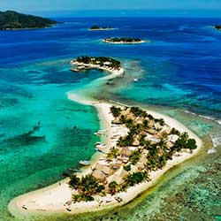
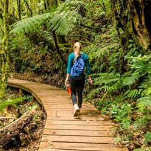
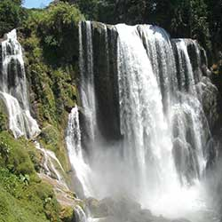
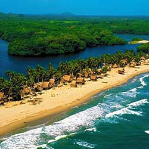
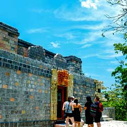
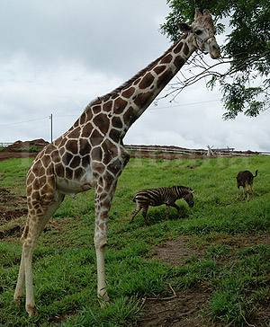

Cayos Cochinos

El Monumento Natural Marino
Archipiélago Cayos Cochinos (MNMACC)
está situado en las coordenadas 15° 57´N
- 86°29´O en las aguas marítimas continentales al norte de Honduras. Pertenece
al Municipio de Roatán, departamento de
Islas de la Bahía, tiene una superficie
terrestre de 1220 km2 (122,000 Ha) que
equivale a 489.25 km2 (48,925.23 Ha) de
Macrozona Central y 730.75 km2 (73,
074.77 Ha)
Página Principal
La Tigra

ubicado en el departamento de Francisco Morazán, aproximadamente a
15 kilómetros al noreste de Tegucigalpa,
Tiene un área total de 243.406 km2
que comprende la zona núcleo y su
zona de amortiguamiento, el parque
tiene límites con cinco municipios que
son: Distrito Central, San Juan de
Flores, Santa Lucía, Valle de Ángeles
y Talanga. De ellos el que tiene su
mayor cobertura es el Distrito Central.
Página Principal
Pulhapanzak

Las Cataratas de Pulhapanzak, además de ser uno de los sitios turísticos más
visitado por poseer la cascada más famosa, bella y grande de Honduras,
también son un lugar de gran importancia cultural y arqueológica.
Las Cataratas de Pulhapanzak estan ubicadas dentro de una propiedad privada en la Aldea de San Buenaventura, Municipio de San Francisco de Yojoa,
departamento de Cortés, a 18 kilómetros del Lago.
Página Principal
Parque Nacional Jeannette
Kawas

El Parque Nacional Jeannette
Kawas es uno de los parques
con mayor riqueza y belleza
escénica de la costa norte.
Pantanos, bosques de mangle,
playas rocosas, playas de
arena blanca, arrecifes coralinos y lagunas costeras son
parte de los ecosistemas del
parque. Se divide en dos
zonas: Laguna de los Micos y la
Península de Punta Sal.
Página Principal
Maya Key

La paradisíaca isla de Roatán,
en el departamento Insular de
Honduras, siempre ha sido un
destino inigualable para el turista nacional y extranjero, sus
bellas playas de blanca arena,
y sus cálidas y cristalinas
aguas, hacen de esa zona, un
lugar natural, ideal para disfrutar de unas hermosas vacaciones.
Página Principal
Zoológico Joya Grande

El zoológico Joya Grande ubicado a
pocos km de Santa Cruz de Yojoa,
cuenta con 500 animales de diferentes
especies que se roban la mirada y el
corazón de los turistas.
Todos los días se pueden observar
familias conociendo los hermosos
rincones del zoológico pero sin duda la
mayor afluencia de visitantes son los
fines de semana ya que los turistas
tienen la opción de hospedarse en las
cabañas o en el hotel que también es
parte de este eco parque.
Página Principal